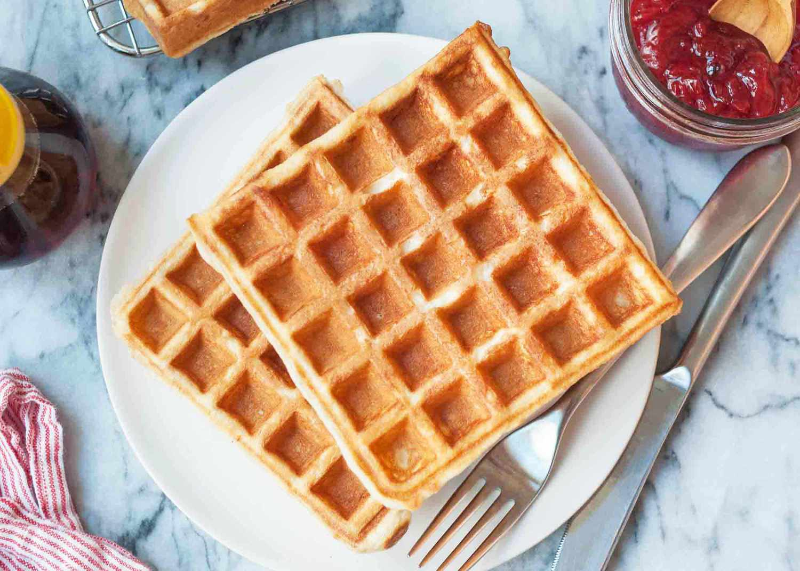

WAFFLES

description
Mix 2 cups flour, 2 tbsp sugar, 1 tbsp baking powder, and ½ tsp salt. In another bowl, whisk 2 eggs, 1¾ cups milk, ½ cup melted butter (or oil), and 1 tsp vanilla. Combine wet and dry ingredients, then cook in a preheated, greased waffle iron for 3-5 minutes until golden. Serve with syrup, butter, or your favorite toppings.
ingredients
- 2 cups all-purpose flour
- 2 tablespoons sugar
- 1 tablespoon baking powder
- 1/2 teaspoon salt
- 2 large eggs
- 1 3/4 cups milk (whole or 2%)
- 1/2 cup melted butter (unsalted) or vegetable oil
- 1 teaspoon vanilla extract
- Non-stick cooking spray or butter for greasing the waffle iron
steps
- Start by preheating your waffle iron according to the manufacturer’s instructions. Usually, it takes about 5-10 minutes.
- In a large mixing bowl, whisk together the flour, sugar, baking powder, and salt until well combined.
- In another bowl, beat the eggs. Then, add milk, melted butter (or oil), and vanilla extract. Whisk everything until smooth.
- Pour the wet mixture into the dry ingredients and stir until just combined. Be careful not to overmix; it's okay if there are a few lumps.
- Lightly grease the waffle iron with non-stick spray or a little butter. Pour the batter into the preheated waffle iron, making sure not to overfill it. Close the waffle iron and cook according to the iron’s instructions, typically 3-5 minutes, or until golden brown and crisp.
- Carefully remove the waffles and serve immediately with your favorite toppings such as butter, syrup, whipped cream, fresh fruit, or powdered sugar.